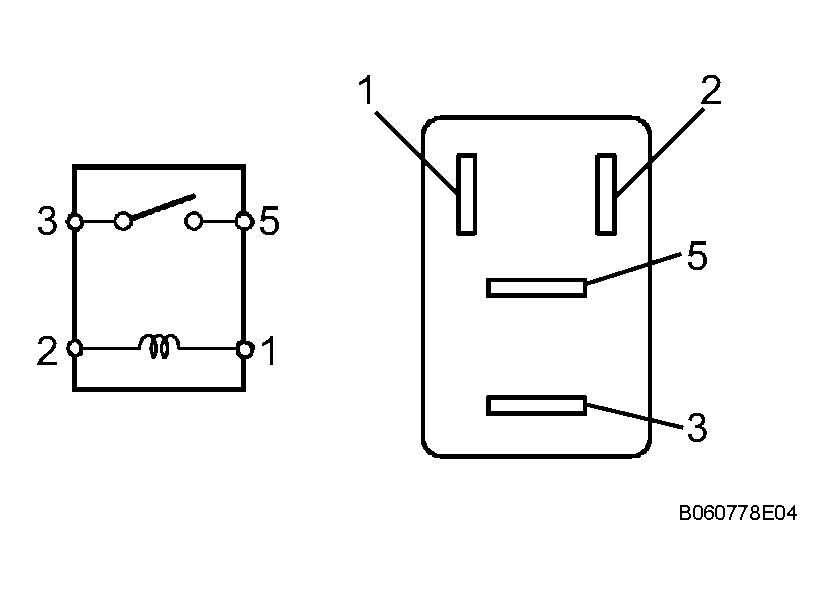

Home
>>
Scion
>>
2006
>>
xB Standard
>>
Repair and Diagnosis
>>
Body & Frame
>>
Windows
>>
Windshield/Window Glass
>>
Power Relay
>>
On-Vehicle Inspection
On-Vehicle Inspection
REMOVE POWER RELAY (Marking: POWER)
Remove the power relay from the instrument panel junction block.
INSPECT POWER RELAY
Measure the resistance of the relay.
Standard resistance
TESTER CONNECTION SPECIFIED CONDITION
Tester Connection
Specified Condition
3 - 5
10 kΩ or higher
3 - 5
Below 1 Ω (When battery voltage is applied to terminals 1 and 2)
If the result is not as specified, replace the relay.
INSTALL POWER RELAY
Fig 1: Inspecting Power Relay

Courtesy of © TOYOTA, LICENSE AGREEMENT TMS1002